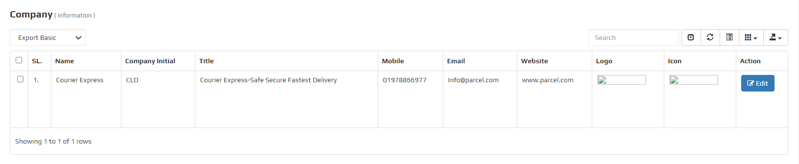

COURIER MANAGEMENT SOFTWARE

About COURIER MANAGEMENT SOFTWARE
In today's fast-paced world, using old methods to manage courier services might result in
inefficiency and missed opportunities. A Courier Management System is a modern system that
simplifies and automates logistical complexity, allowing you to focus on what is most
important: providing outstanding service to your clients.
A Courier Management System allows you to effortlessly track shipments, manage deliveries, and
evaluate driver performance in real time, ensuring that every product arrives on time and
accurately. By switching to a digital system, you gain the ability to streamline routes, cut
operating costs, and improve client happiness, all while benefiting from the simplicity and
dependability that advanced technology provides.
Why is COURIER used?
Domestic Courier Management Software is a digital solution designed to streamline and optimize the operations of courier and delivery services. It helps manage orders, track shipments, optimize routes, handle scheduling, and automate billing and reporting. Additionally, it often includes features for real-time tracking, proof of delivery, and customer communication, improving efficiency and transparency in the courier industry. This software enables courier companies to enhance their service quality, reduce costs, and provide a better experience for their clients.
Merchant Management
Rider Management
Hub/Branch/Agent
Call Center Management
Accounts Management
Manager Management
Merchant Wise Price
Order Manage
Accounts Management
Pick Up Auto Assign
Branch Wise Collection
Merchant Api Integration
Bulk Import
Problem Management
Rider Commission
Employee Attendance
Hub/Branch Commission
Expanse Management
Income Management
SMS Integration
Merchant App
Rider App
Reschedule, Partial & Exchange Delivery
Pathao/Redx Api Integration
Server requirement
Server
Our file is compatible with any Apache.
Any other server is NOT officially supported, and we CANNOT assist with any server
configuration if your server runs anything other than Apache.
PHP Version
Requires PHP from v7.4.
Although PHP v7.4 can be used with Courier but later if you face any issues, the first thing which we
would suggest over support ticket to you will be to fall back to PHP v7.4 as that's the only
Officially support PHP version.
PHP Extensions
- OpenSSL PHP Extension
- PDO PHP Extension
- Mbstring PHP Extension
- Tokenizer PHP Extension
- XML PHP Extension
- Ctype PHP Extension
- JSON PHP Extension
- ZIP PHP Extension
- FileInfo PHP Extension
- BCMath PHP Extension
- ionCube Loader PHP Extension
- GD PHP extension
Consider enabling the OpCache PHP Extension for improved performance. It is optional but encouraged.
Laravel Version
Courier requires Laravel from v7.0
Although Laravel v7.0 can be used with Courier but later if you face any issues, the first thing
which we would suggest over support ticket to you will be to fall back to Laravel v7.0 as that's
the only Officially support Laravel version.
Laravel Extensions
- Laravel blade snippets
- Laravel snippets
- Laravel Artisan
- Laravel Extra Intellisense
- Laravel goto view
- laravel-jump-controller
- laravel-goto-components
- Laravel Blade formatter
- Laravel Create View
- Laravel Blade Wrapper
- DotENV
- DevDb
Database MySQL
In a courier management system, the MySQL database is essential for managing and organizing key data such as shipments, customer details, delivery routes, and courier assignments. The database typically contains tables for storing shipment information (such as tracking numbers, sender and receiver addresses, package weight, and delivery status), customer data (including contact information and delivery preferences), and courier details (for managing driver schedules, routes, and vehicle information). Additionally, the database allows for real-time updates on shipment statuses, ensuring accurate tracking and timely delivery. MySQL's relational structure and indexing capabilities facilitate efficient data retrieval and reporting, enabling the system to provide quick access to information and support seamless courier operations.
Software Features
A Courier Management System (CMS) normally has four sorts of users, each with unique duties and capabilities adapted to their requirements. The users are listed below, along with the features they have access to:
- Admin: The Admin is responsible for overseeing the entire system, managing users, and ensuring smooth
operations.
- Configuration
- Team Management
- Parcel Management
- Operation
- 3PL Operation
- HR & Payroll
- Accounts Management
- Report Management
- Branch/Hub: The user is responsible for this features.
- Rider Management
- Add Hub Incharge
- Parcel Management
- Operation
- Payment processing
- Collect Amount rider
- Re-assign
- Report
- Merchant: The user is responsible for this features.
- Parcel List
- Add Parcel
- Bluk Import
- Report
- Rider: The user is responsible for this features.
- Pickup Parcel List
- Auto Pickup List
- Delivery Parcel List
- Reschedule Order
- Transfer Order List
- Return Parcel List
- Report
Admin Management
The Admin Management module of a courier management system is critical for monitoring and regulating the entire operation. This module enables administrators to efficiently manage user roles, permissions, and access levels, ensuring that only authorized workers can carry out certain duties. It also has functions for monitoring system activity, creating reports, and configuring system settings. This module improves management efficiency by centralizing administrative functions, ensuring that courier operations run smoothly and securely.
Configuration
The Configuration tool included in a courier management system's Admin Management module is critical for customizing and optimizing the system to meet specific company requirements. This functionality enables administrators to configure and alter critical parameters. The Configuration function allows administrators to adapt the system by providing a versatile and user-friendly interface, ensuring that it meets operational requirements and improves overall efficiency. This module is divided into some main submodules:
- Company Info
- Expense Type
- Income Type
- Business Type
- Reason Category
- Order Category
- Area Management
- District Management
- Branch Management
- Charge Management
- Status Change for Riders
- Notice Management
- Pickup Time Management
- Slider Management
- Schedule for Merchant
- Auto Assign for Rider
Company Info
The 'Corporate Info' feature in the Configuration section of a courier management system is designed to centralize and manage essential corporate details, ensuring that the company's branding and contact information remain consistent across all communications, documents, and reports generated by the system. This centralization helps maintain a professional and cohesive corporate identity, making the correct details easily accessible for both internal and external communications. Additionally, the 'Corporate Info' configuration includes search and edit options, allowing for quick retrieval and updates of corporate information, further enhancing the system's efficiency and accuracy.
Expense Manage
The expenditure Type setting function in the courier management
system simplifies the process of controlling expenditure categories. This feature enables administrators to
conveniently manage and control spending kinds, resulting in precise financial tracking and reporting.
Each entry in the expense type list contains a "EDIT" icon, which allows administrators to easily alter and
modify existing expense types. For enhanced control, the function includes a "DELETE" option that allows
administrators to eliminate old or inaccurate expense categories from the system.

To modify a expense, click the "EDIT ICON ", which will open a new popup window. On that form, enter the update details and then click the update button.

To add a new expense, click the "Expense Type" button, which will open a new popup window. On that form, provide the necessary information about the expense, such as name, as well as if the expense is currently active or inactive.

Income Type
The Income Type configuration function in the courier management system simplifies the management of income categories, improving financial monitoring and accuracy. This feature enables administrators to quickly arrange and manage various types of money, resulting in accurate and precise financial tracking. Each income type entry features a "EDIT" icon, allowing administrators to alter and adjust existing income categories as needed. Additionally, the system has a "DELETE" option, which allows you to remove outdated or inaccurate income categories, resulting in an ordered and accurate record of cash inflows.

To modify a income, click the "EDIT ICON ", which will open a new popup window. On that form, enter the update details and then click the update button.

To add a new income, click the "Income Type" button, which will open a new popup window. On that form, provide the necessary information about the income, such as name, as well as if the income is currently active or inactive.

Business Type
The Business Type feature in the courier management system
simplifies the handling of various business categories. This feature enables administrators to design and
organize a variety of business procedures, making it easy to track and report on different segments.
Each entry in the business type list includes a "EDIT" icon, allowing administrators to easily modify and
edit existing company types. In addition, a "DELETE" option is offered to remove old or incorrect company
categories, ensuring that the system remains accurate and up to date.

To modify a business, click the "EDIT ICON ", which will open a new popup window. On that form, enter the update details and then click the update button.

To add a new business, click the "Add Business Type" button, which will open a new popup window. On that form, provide the necessary information about the business, such as name, as well as if the business is currently active or inactive.

Reason Category
The Reason Category setup tool in the courier management system simplifies the process of managing different reason categories for operational activities. This feature allows administrators to quickly identify and control reasons for deliveries, cancellations, and other operations, resulting in accurate record-keeping and reporting. The feature includes a "DELETE" option, which allows you to delete old or incorrect reason categories from the system, improving data integrity and management.

To add a new reason category, click the "Add Reason Category" button, which will open a new popup window. On that form, provide the necessary information about the reason category, such as name, as well as if the reason category is currently active or inactive.

Order Category
The Order Category configuration tool in the courier management system simplifies the structuring of different order categories, increasing operational efficiency. This functionality allows administrators to create and manage categories for various order types, such as express, standard, or priority deliveries. By categorizing orders properly, it guarantees that each order is processed in accordance with its priority and service requirements. The tool also provides a "DELETE" option, which allows administrators to delete out-of-date or unnecessary order categories, resulting in a more ordered and up-to-date system that runs smoothly.

To add a new order category, click the "Add Order Category" button, which will open a new popup window. On that form, provide the necessary information about the order category, such as name, as well as if the order category is currently active or inactive.

Area Management
The Area Management setup tool in the courier management system simplifies the structure and control of service zones across the platform. This feature allows administrators to rapidly establish, manage, and update multiple service areas, ensuring that delivery processes are correctly mapped and carried out. The tool features a "EDIT" option, which allows administrators to make modifications to existing area details, guaranteeing that any changes to service zones are immediately reflected in the system, improving operational accuracy and flexibility.

To modify a area, click the "EDIT ICON ", which will open a new popup window. On that form, enter the update details and then click the update button.

To add a new order category, click the "Add Order Category" button, which will open a new popup window. On that form, provide the necessary information about the order category, such as location, hub, district, area, as well as if the order category is currently active or inactive.

district Management
The Area Management function in the courier management system streamlines the process of designing and controlling service districts across the platform. Administrators may quickly create, manage, and alter different service areas, ensuring that delivery routes and zones are configured correctly. The feature features a "EDIT" icon, which allows for rapid changes to existing area details and real-time updates, improving the precision and adaptability of delivery operations. Furthermore, the search functionality inside Area Management is quite useful, allowing users to quickly discover certain locations, enhancing productivity in administering service zones.

To modify a area, click the "EDIT ICON ", which will open a new popup window. On that form, enter the update details and then click the update button.

Branch Management
The Area Management function in the courier management system is intended to efficiently manage and optimize service branches across the platform. This feature allows administrators to easily create, maintain, and alter numerous service areas, ensuring that delivery zones are properly configured. The "EDIT" icon provides rapid access to altering existing region details, allowing for real-time alterations to improve the precision and flexibility of delivery routes. Furthermore, the search functionality inside Area Management is quite useful, allowing users to quickly discover certain locations and therefore increasing productivity in administering service zones. The function also provides a "DELETE" option, which allows you to delete outdated or superfluous regions, hence speeding the configuring procedure.

To modify a area, click the "EDIT ICON ", which will open a new popup window. On that form, enter the update details and then click the update button.

To add a new branch management, click the "Add" button, which will open a new popup window. On that form, provide the necessary information about the order category, such as hub, district, as well as if the branch management is currently active or inactive.

Charge Management
The Charge Management function in the courier management system simplifies the administration of delivery charges across different zones and services. Administrators can efficiently create, update, and manage various charge structures, ensuring accurate billing and pricing strategies. The feature includes an "EDIT" icon, allowing for swift modifications to existing charge details, providing real-time updates that enhance the flexibility and accuracy of the pricing model. Additionally, the search functionality within Charge Management is highly effective, enabling users to quickly locate specific charges, thereby improving the efficiency of managing pricing policies.

To modify a area, click the "EDIT ICON ", which will open a new popup window. On that form, enter the update details and then click the update button.

To add a new charge management, click the "Add" button, which will open a new popup window. On that form, provide the necessary information about the order category, such as title, inside-dhaka charge, as well as if the charge management is currently active or inactive.

Notice Management
The Notice Management feature in the configuration of the courier management system enhances communication efficiency by allowing administrators to create, update, and manage important announcements across the platform. This function ensures that all users are promptly informed about any updates, policy changes, or critical information. The ability to quickly edit notices ensures that information remains accurate and up-to-date, minimizing the risk of outdated or incorrect communication. This feature is vital for maintaining clear and effective communication within the courier management system, supporting smooth and informed operations.

Pickup Time Management
The Pickup Time Management function in the courier management system streamlines the scheduling and coordination of package pickups across different areas and time slots. Administrators can easily configure, update, and manage pickup time schedules, ensuring that customer requests align with available resources. The feature includes an "EDIT" icon, allowing for quick adjustments to existing pickup times, providing real-time updates that enhance the system's responsiveness and reliability. Additionally, the search functionality within Pickup Time Management is highly effective, enabling users to swiftly find and modify specific time slots, thereby improving the overall efficiency of managing pickup schedules.

To modify a area, click the "EDIT ICON ", which will open a new popup window. On that form, enter the update details and then click the update button.

To add a new pickup time management, click the "Add" button, which will open a new popup window. On that form, provide the necessary information about the order category, such as pickup time, as well as if the pickup time management is currently active or inactive.

Slider Management
The Slider Management feature in the courier management system streamlines the administration of promotional and informational sliders displayed on the platform. Administrators can easily create, update, and manage slider content, ensuring that the most relevant and engaging visuals are presented to users. The feature includes an "EDIT" icon for quick adjustments to existing sliders, allowing for real-time updates that keep the content fresh and aligned with current campaigns. Furthermore, the search functionality within Slider Management is highly effective, enabling users to swiftly locate specific sliders, enhancing the overall efficiency and responsiveness of the system's visual management.

To modify a area, click the "EDIT ICON ", which will open a new popup window. On that form, enter the update details and then click the update button.

To add a new pickup time management, click the "Add" button, which will open a new popup window. On that form, provide the necessary information about the order category, such as pickup time, as well as if the pickup time management is currently active or inactive.

Shedule Merchant
The Schedule for Merchant function in the courier management system is intended to simplify the planning and coordination of delivery schedules for merchants. Administrators may easily design, adjust, and manage merchant-specific delivery schedules to ensure timely and correct service. The feature features a "EDIT" icon, which allows for simple revisions to existing schedules and provides real-time updates, improving the delivery process's reliability and efficiency. Furthermore, the Schedule for Merchant feature's search tool allows users to quickly identify and manage individual schedules, which considerably improves overall merchant delivery management.

To modify a area, click the "EDIT ICON ", which will open a new popup window. On that form, enter the update details and then click the update button.

To add a new Schedule for Merchant, click the "Add Scheduler" button, which will open a new popup window. On that form, provide the necessary information about the Schedule for Merchant, such as start time,end time,from date, to date, as well as if the pickup time management is currently active or inactive.

Auto assign for Rider
The Auto Assign for Rider feature in the courier management system streamlines the process of allocating pick-up tasks to riders, ensuring optimal efficiency and timely deliveries. Administrators can configure rules for automatically assigning deliveries based on criteria such as proximity, workload, and rider availability. The system's dynamic assignment mechanism helps in minimizing pick-up delays and balancing the workload among riders. This feature includes an "EDIT" icon for adjusting assignment rules on the fly, allowing for quick modifications that adapt to changing business needs. The integrated search functionality further enhances efficiency by enabling users to swiftly find and review specific assignment rules or riders, facilitating better management of pick-up operations.

To modify a auto assign for rider, click the "EDIT ICON ", which will open a new popup window. On that form, enter the update details and then click the update button.

To add a new Auto Assign for Rider, click the "Add Auto Assign Info" button, which will open a new popup window. On that form, provide the necessary information about the Auto Assign for Rider, such as select merchant, select rider, as well as if the pickup time management is currently active or inactive.

Team Management
The Team Management function is an essential component of any courier management system, designed to simplify the organization and supervision of your team. This feature enables administrators to easily create, update, and manage team members, ensuring that each employee is allocated the relevant position and has the necessary permissions. With Team Management, you can quickly monitor staff performance, allocate assignments, and manage schedules, resulting in increased operational efficiency. This module is divided into some main submodules:
- User Password Manage
- Merchant Information
- Branch Information
- Rider Information
- Executive Information
User Password Manage
The courier management system's team management function, User Password Manage, provides a streamlined solution to improve security and maintain control over user access. This tool allows managers to simply change team members' passwords, ensuring that they are updated on a regular and safe basis. The search capability makes it easy to find individual users, allowing for simple password management throughout the organization. This feature simplifies user credential administration by focusing on password updates and search capabilities rather than edit or delete options, resulting in a safe and efficient management process.

To modify a area, click the "change password " option, which will open a new popup window. On that form, enter the update details and then click the update button.

Merchant Information
The Merchant Information function in a courier management system's Team Management module enables you to handle and preserve critical information about your merchants efficiently. With the ability to read, modify, and search through merchant information, this feature ensures that all important data is easily accessible and up to date. Whether you need to quickly discover specific merchant details or make necessary modifications, the straightforward interface simplifies the process, giving a consistent experience for managing merchant connections across your team.

To modify a area, click the "edit " option, which will open a new popup window. On that form, enter the update details and then click the update button.

To modify a area, click the "view" option, which will open a new popup window.

Branch Information
The Branch Information function in a courier management system's Team Management module simplifies branch-specific data administration. Using the integrated edit option, administrators may easily amend branch details, ensuring that information is accurate and up to date. The search functionality enables quick retrieval of specific branch information, hence increasing efficiency in handling several branches. This combination of editing and search features enables teams to keep exact control over branch activities, resulting in increased coordination and productivity throughout the business.

To modify a branch information, click the "edit " option, which will open a new popup window. On that form, enter the update details and then click the update button.

To add a new branch information, click the "Branch Register" button, which will open a new popup window. On that form, provide the necessary information about the branch information, such as hub name, mobile number,email address, hub address,password, confirm password, as well as if the branch information is currently active or inactive.

Rider Information
Rider Information, located in the courier management system's team management module, provides extensive capabilities for efficiently managing your delivery personnel. The ability to easily modify rider details allows you to keep all information up to date, ensuring seamless operations. The view option gives managers rapid access to individual rider profiles, allowing them to track performance and make educated decisions. Furthermore, the search functionality allows you to quickly discover individual riders, simplifying the administration process and saving time. This tool improves team management efficiency by giving rider information that is clear, organized, and easily available.

To modify a rider information, click the "edit " option, which will open a new popup window. On that form, enter the update details and then click the update button.

To modify a rider information, click the "view " option, which will open a new popup window.

To add a new rider information, click the "rider Register" button, which will open a new popup window. On that form, provide the necessary information about the rider information, such as name, mobile number, hub, district, email address, password, confirm password, as well as if the rider information is currently active or inactive.

Exacutive Information
The Executive Information function in a courier management system streamlines the process of managing vital information about key team members. This tool allows users to easily edit and update executive profiles, ensuring that all information is accurate and up to date. The search functionality improves usability by allowing users to rapidly find specific executives inside the system. This feature is critical for maintaining structured and accessible team management within the courier service since it allows for easy modification and search of executive information.

To modify a executive information, click the "edit " option, which will open a new popup window. On that form, enter the update details and then click the update button.

To add a new executive information, click the "Registration" button, which will open a new popup window. On that form, provide the necessary information about the executive information, such as name, mobile number, role, email address, password, confirm password, as well as if the executive information is currently active or inactive.

Parcel Management
The Team Management function is an essential component of any courier management system, designed to simplify the organization and supervision of your team. This feature enables administrators to easily create, update, and manage team members, ensuring that each employee is allocated the relevant position and has the necessary permissions. With Team Management, you can quickly monitor staff performance, allocate assignments, and manage schedules, resulting in increased operational efficiency. This module is divided into some main submodules:
- Pickup Request List
- Parcel Request List
- All Parcel List
- Add Parcel
- Order Expert
- Bluk Import
All Parcel List
The "All Parcel List" feature in the Parcel Management module of a courier management system provides a comprehensive overview of all parcels processed within the system. This feature allows users to efficiently manage and monitor parcels by offering essential functionalities such as the ability to edit parcel details, view complete parcel information, and quickly search for specific parcels. The search option ensures that users can effortlessly locate parcels by various criteria, while the edit and view options facilitate seamless updates and reviews of parcel data, ensuring accurate and up-to-date records.

To modify a parcel list, click the "edit " option, which will open a new popup window. On that form, enter the update details and then click the update button.

To modify a parcel list, click the "view " option, which will open a new popup window.

Add Parcel
The Add Parcel feature in parcel management for a courier management system streamlines the process of incorporating new parcels into the system. This functionality allows users to efficiently input details about each parcel, including dimensions, weight, destination, and sender information. By providing a user-friendly interface for entering parcel data, the Add Parcel feature ensures accuracy and reduces manual entry errors. It supports various parcel types and shipping options, enhancing flexibility for different delivery needs. Additionally, the feature integrates seamlessly with other system modules, such as tracking and reporting, to maintain a cohesive and efficient logistics workflow.

Bluk Import
The Bulk Import feature in parcel management for a courier management system streamlines the process of uploading large volumes of parcel data efficiently. By allowing users to import multiple parcel records from CSV or Excel files, this functionality saves time and minimizes manual entry errors. It supports batch processing, enabling the quick addition of parcel details such as sender information, recipient addresses, and tracking numbers. This feature enhances operational efficiency, ensures data consistency, and simplifies the integration of parcel data into the system, making it an essential tool for managing high-volume shipments and improving overall logistics workflow.

Operation Management
In a courier management system, operation management is critical for ensuring efficient parcel handling and timely delivery. Key functions include Parcel Fulfillment, which involves processing and preparing parcels for dispatch; Transfer to Hub, where parcels are moved to central hubs for further distribution; Return to Hub, managing the return of undelivered parcels to the hub; Delivery Processing for Branch, overseeing the final stages of parcel delivery at branch locations; Pickup Transfer, coordinating the transfer of parcels from pickup points to hubs; and Delivery Transfer, managing the transfer of parcels between different delivery points. These operations work seamlessly together to enhance the overall efficiency of the courier system, ensuring parcels are handled promptly and accurately t hroughout the delivery chain.This module is divided into some main submodules:
- Parcel Fullfillment
- Transfer to Hub
- Return to Hub
- Delivery Processing for Branch
- Pickup Transfer
- Delivery Transfer
3PL Operation
In a comprehensive courier management system, the 3PL (Third-Party Logistics) operations encompass a range of essential functions to streamline logistics and enhance service efficiency. The "Transfer to Redx" and "Transfer to Pathao" features facilitate seamless integration with prominent logistics partners, ensuring smooth handovers and tracking of shipments. The "Third-Party Transfer List" provides a consolidated view of all transfers to external logistics providers, enabling better oversight and management. Additionally, the "Third-Party Delivery and Cancel List" allows users to monitor and manage deliveries and cancellations handled by third-party providers, offering transparency and control over the entire process. These features collectively enhance operational efficiency, improve customer satisfaction, and ensure timely and accurate handling of shipments.This module is divided into some main submodules:
- Transfer to Redx
- Transfer to Pathao
- ThirdParty Transfer List
- Thirdparty Delivery and Cancel List
HR & Payroll
The HR & Payroll module of the courier management system offers comprehensive attendance management features to streamline employee tracking and payroll processing. It includes Rider Attendance for recording the presence of delivery personnel, Employee Attendance for general staff tracking, and Daily Attendance for daily logging of work hours. Monthly Attendance aggregates data to provide a summary of attendance over the month, while Employee Wise Attendance and Branch Wise Attendance allow employees and branches to submit attendance requests or preferences. Additionally, Branch Wise Monthly Attendance provides a detailed overview of attendance for each branch, helping to ensure accurate payroll processing and effective management of workforce attendance across the organization.This module is divided into some main submodules:
- Rider Attendance
- Employee Attendance
- Daily Attendance
- Monthly Attendance
- Employee Wise Attendance
- Branch Wise Attendance
- Branch Wise Monthly Attendance
Rider Attendance
The Rider Attendance feature within the HR & Payroll module of the courier management system streamlines the process of tracking and managing rider attendance. This functionality allows for efficient monitoring of rider working hours, shifts, and absences. With built-in search capabilities, administrators can quickly find specific attendance records, filter results by date or rider, and generate detailed reports. This not only simplifies the management of rider schedules but also ensures accurate payroll calculations and enhances overall operational efficiency. By integrating these features into the system, companies can maintain better control over their workforce and improve payroll accuracy.

Employee Attendance
The Employee Attendance feature in the HR & Payroll module of our Courier Management System offers a comprehensive solution for tracking and managing employee work hours and attendance. This feature allows HR personnel to easily monitor attendance records, manage leave requests, and track absenteeism with precision. The integrated search functionality enhances efficiency by enabling quick retrieval of specific attendance records based on criteria such as date, employee name, or department. This ensures streamlined operations, accurate payroll processing, and improved overall management of workforce attendance.

Account Management
The Account Management in a courier management system is designed to streamline the administration and oversight of user accounts. This functionality enables administrators to efficiently create, edit, and delete user accounts, ensuring that each individual has appropriate access levels and permissions. With robust search capabilities, users can quickly locate specific accounts, while comprehensive editing tools allow for detailed modifications to account information. This feature enhances security by providing a clear overview of account activity and status, facilitating better management of users and their roles within the system. The intuitive interface ensures that account management tasks are straightforward and accessible, contributing to a more organized and secure operational environment.This module is divided into some main submodules:
- Branch Collection
- Invoice Processing
- Daily Attendance
- Addvance Payment
- Merchant Payment
- Rider Payment Processing
- Branch Payment Processing
- Branch Payment
- Rider Payment
- Expense Management
- Income Management
- Merchant Payment Update
Branch Collection
The Branch Collection feature in the courier management system simplifies the process of managing collections at various branches. With the ability to view and collect payments, this feature allows branch managers to easily track and record incoming payments from clients. The intuitive interface provides a comprehensive overview of all collections, ensuring accurate and efficient financial management across different locations. By offering both view and collect functionalities, the system enhances operational efficiency, reduces manual errors, and ensures that all branch collections are seamlessly integrated into the overall financial workflow.

To modify a parcel list, click the "view " option, which will open a new popup window.

Merchant Payment Info
The "Merchant Payment Info" feature within the account section of a courier management system offers a streamlined way for managing and updating merchant payment details. This functionality allows users to easily edit payment information, ensuring that records are always accurate and up-to-date. The ability to modify payment details helps in maintaining consistency across transactions, reducing the risk of errors. By providing a user-friendly interface for these edits, the system enhances the overall efficiency and reliability of financial management for merchants.

To modify a parcel list, click the "view " option, which will open a new popup window.

Report Management
A courier management system's Report Management feature enables administrators to effectively monitor and assess the overall performance and operations of the courier service. With the help of the extensive reporting capabilities this module offers, administrators may create thorough reports on a range of topics, including financial transactions, personnel performance, customer satisfaction, and delivery schedules. Administrators may make well-informed judgments, spot patterns, deal with problems before they become serious, and maximize overall service efficiency by using these reports. Admins can access the most pertinent data with ease thanks to the ability to filter and personalize reports, which also improves their capacity to uphold strict operational standards and promote continuous improvement.
- Merchant Payment History
- Merchant Revenue Report
- Revenue Report
- Hub Transaction History
- Rider History
- Tickets Report
- Expense Report
- Income Report
- Income & Expense Summary
- Rider Payment
- Rider Collect History
- Transfer History
- Merchant History
- Hub History
- Merchant Adjustment
- Advance Payment
- Return History
Branch/Hub Management
A courier management system's Branch/Hub handle function makes it easy to handle several branches and hubs on the network. This feature makes it possible to effectively monitor and oversee the activities of every branch, guaranteeing dependable performance everywhere. It gives flexibility in growing or reorganizing the network as needed, with the ease of adding, editing, and deleting branches. Furthermore, the search feature makes it easier to find particular branches or hubs quickly, which promotes better coordination and quicker decision-making. Maintaining a responsive and orderly infrastructure for courier services requires this functionality.
Rider Management
The Rider Management function in a courier management system's Branch/Hub Management module enables administrators to monitor and oversee riders assigned to certain branches or hubs. This feature displays a comprehensive picture of all riders, allowing for rapid access to detailed information such as allocated routes and performance metrics. The Rider Management also features an edit feature, which allows administrators to simply update rider information, reassign routes, or make adjustments to optimize delivery operations. With these characteristics, the Rider Management ensures efficient management and improves the overall efficiency of courier services.

The "Rider Register" improves the onboarding process for new riders. This feature allows branch or hub managers to easily register riders by clicking a single button, reducing the time-consuming procedure of manually entering data. This feature guarantees that new riders are immediately integrated into the system, with all required information recorded efficiently. It improves operational efficiency by lowering the time spent on rider registration, allowing managers to devote more time to monitoring deliveries and other key activities.

To modify a rider management, click the "view " option, which will open a new popup window.

To modify a rider management, click the "edit " option, which will open a new popup window. On that form, enter the update details and then click the update button.

Add Hub Incharge
The "Add Hub Incharge" feature in the Branch/Hub Management module of a courier management system is designed to streamline the assignment and oversight of key personnel at various hubs. This feature allows administrators to efficiently designate an incharge for each branch or hub, ensuring smooth operations and accountability. By providing a centralized platform for managing hub incharges, the system enhances operational transparency, making it easier to monitor performance and address issues swiftly. With capabilities to edit, delete, and search for hub incharges, this feature is essential for maintaining an organized and well-functioning courier network.

Parcel Management
The Parcel Management function for Branch/Hub management in a courier system enables effective oversight of parcel operations across numerous locations. Branch or hub managers can use this application to view all arriving and outgoing shipments, ensuring that operations run smoothly. The integrated search functionality improves this process by allowing managers to easily discover specific packages within the system, hence improving tracking and management activities. This combination of viewing and searching capabilities improves parcel management's organization and responsiveness, hence increasing the courier service's efficiency.

To modify a parcel list, click the "view " option, which will open a new popup window.

Parcel Manage
The "Add Parcel" feature within the Parcel Management module for Branch/Hub Management streamlines the process of adding and managing parcels at various branches or hubs. It allows users to efficiently enter parcel details, assign them to the appropriate branch or hub, and ensure that each parcel is tracked accurately throughout its journey. This feature enhances operational efficiency by enabling quick data entry, minimizing errors, and providing a centralized system for tracking parcels across different locations. It also supports easy access to parcel information, ensuring that branches and hubs can manage their parcel workflow smoothly and effectively.

To modify a parcel list, click the "view " option, which will open a new popup window.

Operation Management
The Branch/Hub Management operation automates the management of several branches or hubs inside a courier management system, providing complete control over branch-related tasks. This tool allows users to easily add, amend, and delete branch information, keeping the network of locations up to date and structured. Users may rapidly discover certain branches or hubs thanks to sophisticated search features, allowing for faster decision-making and greater operational efficiency. This module is critical for ensuring seamless communication and coordination across multiple sites, hence improving overall service delivery and customer satisfaction. This module is divided into some main submodules:
- Pick-up Parcel
- Pick-up Hub
- Daily Attendance
- Transit Parcel
- Destination Hub
- Delivery Parcel
- Return Processing
- Reschedule Parcel
Payment Processing
The payment processing feature in a courier management system's branch or hub is intended to streamline and simplify the financial activities related to package deliveries. This feature enables branches or hubs to manage payments more efficiently, whether they're collecting service fees, processing refunds, or handling cash on delivery (COD) payments. By integrating with the overall system, it provides accurate tracking of all financial actions, decreasing errors and increasing accountability. The payment processing module also offers thorough data and real-time updates, allowing branch or hub administrators to track cash flow, reconcile accounts, and verify that all transactions are completed securely and quickly.
Collect Amount From Rider
The "Collect Amount From Rider" option in a courier management system simplifies the process of processing payments collected by riders from consumers. This tool enables branch or hub managers to efficiently track, verify, and reconcile the amounts paid by riders at the end of their delivery shifts. The system helps to avoid discrepancies by providing a visible and orderly means for tracking these transactions, ensuring that all collected cash are appropriately accounted for. This function not only improves financial responsibility, but it also streamlines the cash management process, lowering the chance of errors and fraud.
Parcel Re Assign
The "Parcel Reassign for Branch/Hub" feature in a courier management system simplifies the process of redirecting shipments between branches or hubs. This feature is essential for optimizing delivery routes, controlling load balancing, and addressing logistical issues. With a few clicks, users can reassign parcels to the most appropriate branch or hub, assuring fast and efficient delivery. The feature also includes complete tracking and audit trails, allowing customers to fully monitor and oversee the reallocation process. This ensures that shipments are always delivered to their intended location, reducing delays and enhancing overall operating efficiency.
- Pickup Re Assign
- Delivery Re Assign
- Hub Fullfillment
Report Management
Report management gives a full overview of all operations inside a single branch or hub. It collects data on package handling, such as inbound and outbound shipments, parcel statuses, and operational indicators. This tool allows managers to monitor performance, discover patterns, and make informed decisions to increase efficiency. Detailed data on package movements, employee performance, and customer contacts can be provided, providing a detailed picture of branch or hub operations. This functionality is critical for ensuring transparency, increasing accountability, and streamlining the overall logistics process.
- Rider History
- Transaction History
- Rider Collect History
- Transit History
- Return History
Merchant Management
Merchant Management in a courier management system is critical for simplifying business operations by efficiently managing merchant-related tasks. This tool enables administrators to simply add, amend, and manage merchant profiles, ensuring that all merchant information is current and accurate. Users can rapidly identify specific merchants thanks to extensive search and filter capabilities, which saves time on manual data retrieval. Additionally, the system allows for seamless tracking of each merchant's operations, such as shipment history and payment records, which improves transparency and accountability. By automating these operations, the Merchant Management function helps to increase operational efficiency, customer service, and company connections.
Parcel Management
The Parcel Management function in Merchant Management provides a powerful tool for retailers to efficiently track and manage their parcels. This feature enables retailers to conduct date-based searches, allowing them to easily discover shipments based on certain dates or date ranges. This feature is very useful for tracking parcel movements, confirming delivery statuses, and managing historical data.

Parcel Add
Users can manage parcel data more efficiently in the Parcel
Add area by providing necessary information. This section includes fields for Customer Name and Customer
Mobile, which can help you identify and contact the receiver. The Address field specifies the delivery
location. Users can specify the parcel's Select Weight, Select District, and Select Area for accurate
delivery routing, as well as its Selling Price.
The Collection (TK) column is also used to record the amount collected, while the Delivery Type and
Product Type variables help categorize the item. Each parcel order is uniquely identified by the Order
ID column, and extra notes can be entered in the Remarks area. Options for Partial Delivery? and
Exchange Delivery? allow flexibility in dealing with unique delivery requirements or exchanges,
guaranteeing comprehensive parcel management within the courier system.

Bluk Import
The Bulk Import function simplifies the process of importing several merchants at once. This feature enables merchants to upload massive amounts of data efficiently, minimizing the time and effort required for human entry. This feature assures compatibility with existing data sources by supporting a variety of file formats, including CSV and Excel.

Report Management
The Report Manage function provides a full picture of merchant performance and operations. This tool allows administrators to create and see detailed reports on a variety of parameters, including transaction volume, delivery data, and financial summary. By providing insights into merchant performance, the Report feature aids in reviewing merchant operations' efficiency, recognizing trends, and making educated decisions to improve service delivery. Reports can be tailored to focus on specific time periods, transaction kinds, or merchant categories, making it a versatile tool for monitoring and evaluating merchant data. This functionality is critical for streamlining operations, strengthening merchant relationships, and assuring overall business success.
- Parcel History
- Return History
- Payment History
Rider Management
Rider management in a courier management system is an important component that ensures efficient handling of riders, who are critical for delivering products on schedule. This functionality enables administrators to create, manage, and track riders, as well as allocate deliveries and assess their performance. Additionally, the system allows riders to handle specific aspects of the business, such as updating delivery statuses or engaging with consumers. This level of autonomy improves operational efficiency by empowering riders to take control of certain activities, minimizing reliance on central management, and allowing for faster decision-making on the ground.
Pick Up Parcel List
The Rider module's Pick Up Parcel List function makes it easier to manage and track parcels that have been allocated for collection. This tool allows riders to conveniently track the status of parcels, ensuring that each box is accounted for and picked up when scheduled. The integrated search tool improves usability by allowing users to quickly retrieve parcel information and locate individual packages based on parameters such as tracking number, rider name, and pickup status. This coordinated strategy increases operating efficiency and assures a smooth pickup process.
Auto Pick Up List
The Auto Pickup List feature is intended to improve the rider's workflow by giving a full list of planned pickups. This list covers important information such as the Tracking ID, Pickup Date, Pickup Time, Merchant Name, Merchant Phone Number, Merchant Address, Type, and Status. Riders can instantly access and manage their pickups, resulting in more efficient operations. The Search feature allows riders to filter the list by Merchant Name, making it simple to find specific merchants and successfully coordinate pickups.
Delivery Parcel List
Riders can easily manage package statuses in the Delivery package List, which includes options for "Delivered," "Partial," "Return," and "Reschedule." Each parcel can be assigned only one status at a time, providing for easy and exact tracking. The system ensures that riders can change the state of each parcel based on its delivery progress, with the option to choose only one of the available statuses. This streamlined approach aids in the maintenance of correct records and the seamless operation of delivery management systems.

Reshedule Order
The "Reschedule Order" function gives riders the ability to change the delivery time of an order based on real-time conditions and client preferences. This feature is critical for streamlining delivery routes and increasing customer satisfaction. When a rider wants to reschedule an order, they can use a user-friendly interface to choose a new delivery time slot from the available possibilities. The system updates the order status and alerts both the customer and the logistics team to the revised schedule. This provides continuous communication and efficient delivery operations, which reduces delays and improves overall service reliability.
Transfer Order List
The Transfer Order function simplifies the process of sending parcels between riders or locations. This tool makes logistics more effective by allowing riders to generate and track transfer orders smoothly. Each transfer order comprises information about the parcel's origin, destination, and engaged riders. The system guarantees that all transactions are accurately recorded, reduces errors, and improves overall operational efficiency. Riders can see and acknowledge transfer orders via their mobile or online application, keeping them informed of their tasks and allowing them to manage their deliveries successfully. This functionality improves rider coordination, package tracking, and guarantees that all transf ers are done on schedule.
Return Parcel List
The Return Parcel List is an important tool that helps to streamline the process of managing returned items. This list gives riders an overview of all parcels that need to be returned to the sender or the warehouse. Each entry on the list contains important information such as the parcel's tracking number, sender and receiver information, reason for return, and current status. Riders can better organize their routes and handle returns if they have this information at their fingertips. This function not only improves operational efficiency but also increases customer satisfaction by guaranteeing that return shipments are processed on time and accurately.
Report Management
The Report Management tool gives detailed information about rider performance and activities. This tool allows administrators to provide thorough reports on different elements of rider operations, such as delivery efficiency, route optimization, and overall productivity. Key functionalities include counting the amount of completed deliveries, checking punctuality, and assessing client feedback. This report aids in the assessment of rider performance and identification of areas for improvement by combining data such as delivery times, distances traveled, and customer ratings. It also makes it easier to assess how well riders follow corporate regulations and standards.
- Parcel History
- Transfer History
- Return History
Our Services(Creative Software Solutions)
Creative Software is committed to providing a wide selection of high-quality services that are tailored to your specific company requirements. Our team of experts is dedicated to providing solutions that not only fulfill the needs of the sector, but also support creativity and development.
- Software Development: We specialize in developing unique software that is suited to your specific business needs. From concept to deployment, our development approach ensures that your software is scalable, secure, and efficient, allowing you to improve your operations and meet expectations.
- Website Development: A website is the digital representation of your company. We design and construct websites that are both visually appealing and performance-optimized. Whether you require a simple business website or a complicated e-commerce platform, we have the expertise to bring your idea to reality.
- Apps Development: In today's focused on mobile devices environment, having a reliable app is critical. We create native and cross-platform mobile apps that deliver a consistent user experience across all devices. Our apps are intended to engage people and add genuine value to your business.
- Digital Marketing: Our digital marketing services allow you to efficiently reach your target audience. We provide a comprehensive range of marketing solutions, such as SEO, social media marketing, content marketing, and paid search advertising. Our initiatives are data-driven and aim to maximize Returns.
- UI/UX Design: A excellent user experience is essential for the success of any digital product. Our UI/UX design team is dedicated to building intuitive and engaging interfaces that increase user happiness and promote conversions. We ensure that your product is not only practical, but also enjoyable to use.
- IT Outsourcing: Allow us to handle your IT needs while you focus on expanding your business. Our IT outsourcing services give you access to high-quality talent and technology, ensuring that your IT infrastructure is dependable, secure, and scalable. We provide adaptable solutions that complement your business model and budget.
FAQ
A FAQ is a list of frequently asked questions (FAQs) and answers on a particular topic.
Credits & Resource
- Each code is considered property for the Creative software. The project will be delivered to clients for uses only.
- This project is not marketable and can only be used. If proof of sale is found, you can take action in accordance with the software law.
- © 2024 Creative Software. All Rights Reserved.
Support
This Service maintenance will cover following services:
- Online Training
- Online Support
- Pay to visit and get support